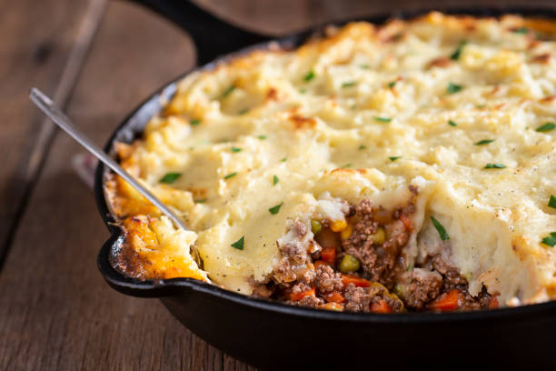

Shepherds Pie

Description:
Traditional Irish Shepherd’s Pie would actually call for ground lamb. The difference between Shepherd’s Pie and Cottage Pie is the meat. Cottage Pie uses ground beef, while Shepherd’s Pie uses ground lamb.
I called this recipe Shepherd’s Pie. But, I wrote the recipe so that you could use ground beef or ground lamb.
I typically use ground beef because it is widely available. But, for a special occasion, like St. Patricks day, I would use ground lamb.
Ingredients:
Meat Filling
- 2 tablespoons olive oil
- 1 lb. 90% lean ground beef -or ground lamb
- 1/2 teaspoon salt
- 1/2 teaspoon ground black pepper
- 1 tablespoon Worcestershire sauce
- 2 garlic cloves -minced
- 2 tablespoons all purpose flour
- 2 tablespoons tomato paste
- 1 cup beef broth
- 1 cup frozen mixed peas & carrots*
- 1/2 cup frozen corn kernels
- 1 cup chopped yellow onion
- 2 teaspoons dried parsley leaves
- 1 teaspoon dried rosemary leaves
- 1 teaspoon dried thyme leaves
Potato Topping
- 1 ½ - 2 lb. russet potatoes -about 2 large potatoes peeled and cut into 1 inch cubes
- 8 tablespoons unsalted butter -1 stick
- 1/3 cup half & half
- 1/2 teaspoon garlic powder
- 1/2 teaspoon salt
- 1/4 teaspoon ground black pepper
- 1/4 cup parmesan cheese
Steps: